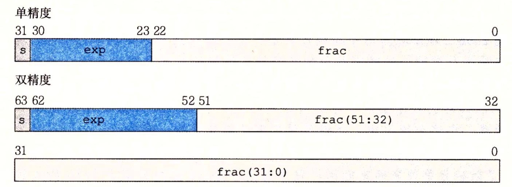
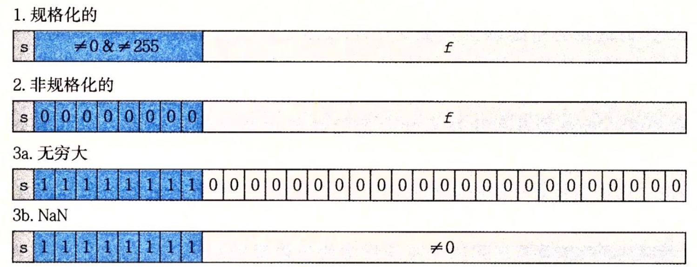

CSAPP(1) - 信息的表示和处理
文章目录
计算机存的什么
计算机存储的是二进制，每一位存储的是0或1。大多数计算机使用1字节（也就是8位），作为最小可寻址的内存单位。 每个字节都有一个唯一的数字来标识，也就是地址（address）。每个计算机都有一个字长（word size），也就是常说的64位操作系统，32位操作系统。字长决定了虚拟地址空间的大小， 比如32位有4GB的内存空间，64位则是16EB（1TB = 1024GB，1 EB = 1,024 PB = 1,048,576 TB）。
整数
原码，反码，补码
计算机存储的是二进制，现实中数字有正负之分，二进制如果想表示正负数怎么办呢？ 为了解决正负数问题于是有了 原码 ，原码的表示方式是：第一位不再表示有效位，而是符号位，0代表正数，1代表负数
[1001] 这个8位二进制，本该表示 十进制的9，现在他表示为 -1，第一位（1）是符号位，后面的才是真正的值。
| 正数 | 二进制 | 负数 | 二进制 |
|---|---|---|---|
| +0 | 0000 | -0 | 1000 |
| +1 | 0001 | -1 | 1001 |
| +2 | 0010 | -2 | 1010 |
| +3 | 0011 | -3 | 1011 |
| +4 | 0100 | -4 | 1100 |
| +5 | 0101 | -5 | 1101 |
| +6 | 0110 | -6 | 1110 |
| +7 | 0111 | -7 | 1111 |
现在计算机可以存储负数了，我们进行运算操作：
- 十进制：1+1 = 2 ； 二进制则是：0001+0001 = 0010
- 十进制：-1 + （-1） = -2 ； 二进制则是： 1001 + 1001 = 10010 第一位符号位仍然是1 仍然表示 - ，结果是-2
- 十进制：1 + （-1） = 0；二进制则是：0001+1001 = 1010 结果是-2
从上面计算看出，当出现正负数相加的时候，结果会出现问题。 虽然原码表示了正负数，运算却有问题。 为了解决正负数相加问题于是有了反码，反码的表示方式是：正数的反码是其本身，负数的反码是在其原码的基础上，符号位不变，其余各位取反
| 正数 | 二进制 | 负数 | 二进制 |
|---|---|---|---|
| +0 | 0000 | -0 | 1111 |
| +1 | 0001 | -1 | 1110 |
| +2 | 0010 | -2 | 1101 |
| +3 | 0011 | -3 | 1100 |
| +4 | 0100 | -4 | 1011 |
| +5 | 0101 | -5 | 1010 |
| +6 | 0110 | -6 | 1001 |
| +7 | 0111 | -7 | 1000 |
现在我们看看正负数相加：
- 十进制：1 + （-1） = 0；二进制则是：0001+1110 = 1111 ，正好对应反码表里的 -0
这样就解决了正负数相加的问题，但现在还有一个问题： 0 有两种表示方式：0000和1111，现实中0是不分正负的，计算机也需要解决，否则判断是否为0还需要判断两次（+0和-0）。为了解决0有两种表示类型 于是有了 补码，补码的表示方式是：正数的补码就是其本身， 负数的补码是在其原码的基础上，符号位不变，其余各位取反， 最后+1（负数反码+1）
| 正数 | 二进制 | 负数 | 二进制 |
|---|---|---|---|
| +0 | 0000 | -0 | 0000 |
| +1 | 0001 | -1 | 1111 |
| +2 | 0010 | -2 | 1110 |
| +3 | 0011 | -3 | 1101 |
| +4 | 0100 | -4 | 1100 |
| +5 | 0101 | -5 | 1011 |
| +6 | 0110 | -6 | 1010 |
| +7 | 0111 | -7 | 1001 |
| – | – | -8 | 1000 |
- 原本1111表示-0，+1后： 1111+0001 = 10000，补位后溢出不计入，所以最终结果是0000
- 1000没有人用，于是就给了-8
现在正负0的二进制形式都为0000，并且还多出了一个表示数字-8 再来计算一下正负数相加：
- 十进制：1 + （-1） = 0；二进制则是：0001+1111 = 10000 ，溢出不计入，最终结果0000
运算溢出
如果存储大小为4位，取值范围就是[1000, 0111] -8 ~ 7。
正溢出：
- 十进制：5+5 = 10， 二进制0101+0101 = 1010（十进制结果-6），因为溢出导致将原来符号位的0改成了1，结果变成了负数。
负溢出：
- 十进制-5 + （-5）=-10，二进制1011+1011 = 0110（十进制结果6），溢出位不计入，最终因为溢出导致将原来符号位的1改成了0，结果变成了正数
有符号与无符号的转换
在c语言中整型加上unsigned来表示无符号整数。这样的话补码[1000，01111] 的范围是-8 ~ 7，去掉符号位的话就是[0000，1111] 0~15。
无符号转换成有符号
| 十进制 | 无符号 | 有符号 | 最终十进制结果 |
|---|---|---|---|
| 1 | 0001 | 0001 | 1 |
| 15 | 1111 | 1111 | -1 |
有符号转换成无符号
| 十进制 | 有符号 | 无符号 | 最终十进制结果 |
|---|---|---|---|
| 1 | 0001 | 0001 | 1 |
| -8 | 1000 | 1000 | 8 |
| -1 | 1001 | 1111 | 15 |
扩展与截断数字
扩展（例如从 4位 到 8位）
c语言中short转换为int的操作，小字节转换到大字节，不会对原数据造成丢失
- 无符号数：加 0
| 转换前的十进制 | 4位 | 8位 | 转换后的十进制 |
|---|---|---|---|
| 1 | 0001 | 0000，0001 | 1 |
| 15 | 1111 | 0000，1111 | 15 |
- 有符号数：加符号位
| 转换前的十进制 | 4位 | 8位 | 转换后的十进制 |
|---|---|---|---|
| -1 | 1001 | 1111，0001 | -1 |
| -8 | 1000 | 1111，1000 | -8 |
截取：
如果将w位转为k位，其中w>k，则取后k位，移除 高位 w ~ k 的位。例如 8位 到 4位：则移除前4位，保留后4位。所以可能会丢失高位的数据，导致结果有问题
- 无符号数：直接保留后四位
| 转换前的十进制 | 8位 | 4位 | 转换后的十进制 |
|---|---|---|---|
| 17 | 0001，0001 | 0001 | 1 |
| 255 | 1111，1111 | 1111 | 15 |
- 有符号数：保留后四位，第一位表示符号位（结果是补码）
| 转换前的十进制 | 8位 | 4位 | 转换后的十进制 |
|---|---|---|---|
| -9 | 1000，1001 | 1001 | -7 |
| -15 | 1000，1111 | 1111 | -1 |
浮点数的表示
浮点数在二进制中的存储方式
十进制中 +100.05 可以用科学计数法表示成 +1.0005*$10^2$。这样的话我们就可以根据科学计数法，在二进制中存储了。
将位分成三份存储上面 的值：符号位(0)，整数位（10005），阶数位（2）。最后因为是二进制，计算的时候把$10^n$改成$2^n$。
根据国际标准IEEE 754，任意一个二进制浮点数V可以表示成下面的形式：
V=$(−1)^s$𝑀$2^E$
- $(-1)^s$表示符号位，当s=0，V为正数；当s=1，V为负数。
- M表示有效数字，大于等于1，小于2。
- E表示指数位

M：二进制中M的第一位总是1，所以IEEE 754规定，这个数字可以忽略，在运算的时候再添上。这样对于32位浮点数，就有24位有效数字，64位则有53位。增加了表示范围 E：E 是无符号的，如何表示负数，也就是 2^-n 这种形式？ 实际的E表示为 E = e - Baic。其中e是无符号数，Baic=2^(k-1)-1。以32位浮点数为例，e的范围在0~255，Baic = 127，E的范围就是-126~+127。
阶码（E）的值决定了 这个数是规格化，非规格化或者特殊值。

- 规格化：当阶码域不全为0时，或者不全为1时，得到真实值，再将有效数字M前加上第一位的1
- 非规格化：阶码域全为0，小数域不再补上1，这样做是为了表示±0，以及接近于0的很小的数字
- 特殊值：当阶码全为1，小数域全为0的时候，根据s的值，表示为 + \infty，- \infty。如果小数域不全为0，则为NaN
大小端
数据在内存中的存储顺序方式有大小端之分。
举例：如果int类型的x 存储在0x100的位置，十六进制表示：0x01234567 ，根据大小端有两种不同存储方式：
- 大端： 按照最高有效位（这里是01）到最低有效位的顺序存储
| 0x100 | 0x200 | 0x300 | 0x400 |
|---|---|---|---|
| 01 | 23 | 45 | 67 |
- 小端：按照最低有效位（这里是67）到最高有效位的顺序存储
| 0x100 | 0x200 | 0x300 | 0x400 |
|---|---|---|---|
| 67 | 45 | 23 | 01 |
一般在应用层开发无需在意大小端，字节顺序不可见。只有在网络传输的时候，大端机器传输给小端机器，或者反过来时，才会有大小端转换问题。
总结
计算机内存有限，溢出是必须考虑的事情。整数用补码形式存放于计算机，便于进行数值计算。两个数进行计算，当超出类型的字节范围，就会有溢出问题，造成程序异常。一个数据的存放在内存的顺序有大小端之分。